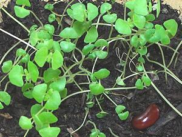

[Tokhm-e Sharbati (Persia - lit Sharbati Seed); Salvia hispanica]
Native to Mexico and Guatemala, chia seed was the third most important crop of the Aztecs, after corn and beans and ahead of amaranth. It is not a grain, but seed of a member of the Sage genus (Salvia) in the Mint Family (Lamiaceae). It is highly nutritious and gluten free, with a high protein content, and is very rich in omega-3 fatty acids, antioxidants, and dietary fiber. Today the leading producer is Australia, followed by Mexico, Bolivia, Argentina, Ecuador and Guatemala.
North of the Mexican border the main use of chia seed has been for the green fur on Chia Pets, but it has started to penetrate the Health Food and Ethnic Foods markets. In Persia (Iran) it is now used in Sharbati (cooling soft drinks), alone or in combination with the traditional London Rocket seeds. Chia sprouts are edible and used similarly to alfalfa sprouts. Food manufacturers are now experimenting with replacement of as much as 25% of the egg and oil in cakes with a gel made from chia.
More on Sage.
 This seed has long been used whole in beverages, because, like the Basil seeds popular in Thailand, it absorbs about 12 times its weight in liquid, producing a gelatinous effect. Chia can be easily sprouted, and the sprouts used similarly to alfalfa sprouts. You have to plant a zillion of them because they are so small. Yes, that's our infamous kidney bean at the lower right of the photo to the left.